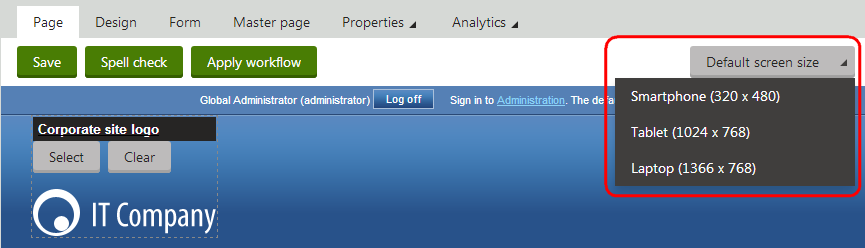

Creating mobile pages
This page describes tasks that are common when developing mobile pages in Kentico.
Switching device views
Kentico allows you to develop pages and page templates for specific devices. Once you enable and create device profiles, the device selector appears in the Pages application, and you can switch the context between different profiles.
Click the device selector. A list of enabled device profiles appears.
Click a device profile.

Switching between device profiles in the Pages application
By default, pages do not have device-specific layouts. When you view a page on the Design tab, you can see and modify the content of the default page layout for the given page.
If you create a device-specific page layout for the page template, or if the page uses a shared layout that has a layout mapping defined for the current device profile, you can see the structure of the device-specific layout.
Device layout priority
Custom device layouts always take priority over shared layout mappings. If you defined a custom device layout for a page's template, the page always uses the custom layout even if the template originally uses a shared layout with a mapping for the current device.
Page templates share web part zones between their default page layout and all device layouts. If you modify the content or configuration of a web part zone, the changes also affect the output of the template's other page layouts that contain a zone with the same ID.
You can find all web part zones that do not exist in the current page layout at the bottom of the page with a gray header and the (not in layout) suffix.
When the system renders the page on the live site, only the content of zones that exist in the currently active page layout are visible.
Previewing pages on different devices
The Preview modes of the Pages application allows you to view pages as they appear on different devices.
The Preview mode only imitates the size and appearance of the device. The pages are still rendered with your browser engine.
Select the device profile that you want to preview.
Switch to Preview mode.
The page is shown in a frame that imitates the device. To rotate the device 90 degrees, switch between Portrait and Landscape orientation.
Customizing the preview frame
Kentico allows you to customize the dimensions and look of the Preview mode when using device profiles.
The preview consists of nine pieces, eight forming the frame and one center piece, which contains the content of the page.
Open the Device profiles application.
Edit (
 ) the device profile for which you want to design a custom preview frame.
) the device profile for which you want to design a custom preview frame.On the General tab, enter the Preview width and Preview height.
Click Save.
Switch to the Theme tab and upload files that represent pieces of the frame. Upload the following pieces and their alternatives for the rotated version of the preview frame. It is recommended to upload the files into a separate folder.
top left, top center and top right piece
center left and center right piece
bottom left, bottom center and bottom right piece
On the Theme tab, click Create to add a new CSS file. Name the file DeviceProfile.
In the stylesheet, specify which image corresponds to which part of the preview frame. Each part of the frame has a CSS class. Use the following pattern to construct a CSS selector that identifies a particular class:
.DeviceFrame.<device profile name>[.Rotated] .<vertical direction> .<horizontal direction>Add the .Rotated suffix to identify pieces of the device when it is rotated.
Replace <vertical direction> with one of the following: TopLine, CenterLine, BottomLine
Replace <horizontal direction> with one of the following: LeftPiece, CenterPiece, RightPiece
The following is an example definition of a preview frame piece.
.DeviceFrame.iPad.Rotated .TopLine .LeftPiece{ background-image: url('./Images/top_left_rotated.png'); width: 126px; height: 114px;}Allowing visitors to override the device detection
Some visitors may prefer to view the standard version of the website (i.e. the content of the Default device profile) even when using a device that fits into a different device profile. Kentico provides a component that allows users to switch between the content created for the detected device profile and the default version of the website.
Open the Pages application.
Select a page and switch to the Design tab. For best results, use a page that visitors can access anywhere on the site, such as the master page.
Add the Switch mobile device detection web part onto the page.
Set the following properties for the web part:
Mobile link content - sets the text of the link that the web part displays on the device-specific version of the site. This link allows users to switch to the default version of the website.
Desktop link content - sets the text of the link that returns visitors to the device-specific version of the site.
(Optional) Define the SwitchDeviceDetection CSS class in the website's stylesheet or directly in the web part's CSS styles. The web part applies this class to the generated links. See also: Designing websites using CSS.
The web part appears only for visitors whose device matches a non-default device profile. If a visitor switches to the default (desktop) content, the web part displays a link that re-enables device detection for the given visitor and returns them to the device-specific version of the site.
Adjusting web part properties for specific device profiles
If you need to change the behavior of web parts according to the current device profile, insert the appropriate macro expressions into the web part properties. This allows you to dynamically adjust pages that use the same content for their default page layout and device layouts.
See also: Device macros
Example
The following steps show how to make a web part visible only for the Medium (Tablet) device profile.
Open the Pages application.
Select the page containing the web part.
Switch to the Design tab.
Configure (double-click) the web part. The Web part properties dialog opens.
Expand the Visibility section of the web part properties.
Click Edit value (
 ) next to the checkbox of the Visible property. The Edit value dialog opens.
) next to the checkbox of the Visible property. The Edit value dialog opens.Enter the following macro expression:
K#{% CurrentDeviceProfileName =="MediumDevice"%}Click OK to insert the macro value into the property.
Click Save & Close to save the configuration of the web part.
The system evaluates the macro expression when rendering the page. If the name of the current device profile matches the text (MediumDevice), the macro returns a true value, which dynamically enables the web part's Visible property.
Using device-specific transformations
The transformations that you use to display data have a significant effect on the design of pages. If you need to assign different transformations for specific devices or device profiles, add macro expressions into the transformation properties of the appropriate web parts.
See also: Device macros
Example
This example demonstrates how to create and assign a dedicated transformation for displaying news pages on mobile devices.
Open the sample Corporate Site in the Pages application.
Select the News page and switch to the Design tab.
Configure (double-click) the News repeater web part. The Web part properties dialog opens.
Scroll down to the Transformation property and click New next to the textbox. The New transformation dialog opens.
Type NewsList_mobile as the Transformation name and enter the following code:
<divclass="description"style="width:500px;"><aclass="header bold"href="<%# GetDocumentUrl() %>"><%# Eval("NewsTitle",true) %></a><p><%# Eval("NewsSummary") %><br /><br /><spanclass="black bold"><%# GetUserFullName(Eval<int>("NodeOwner")) %> | </span><spanclass="gray"><%# Eval("NewsReleaseDate") %></span></p></div>
This is a simplified version of the default corporatesite.transformations.NewsList transformation, without teaser images and with a limited text width.Click Save and Close the dialog.
Click Edit value (
) next to the Transformation property.Enter the following macro expression in the Edit value dialog:
K#{%if(CurrentDevice.Data["IsMobileDevice"] ANDGlobalObjects.DocumentTypes["CorporateSite.Transformations"].Children.Transformations.Exists(CodeName =="NewsList_mobile")){"corporatesite.transformations.NewsList_mobile"}else{"corporatesite.transformations.NewsList"}%}This macro evaluates a condition and returns the transformation name according to the result.
The CurrentDevice.Data["IsMobileDevice"] part of the condition checks whether the page is being viewed by a mobile device. This directly searches the data available for the current device (the device profile of the current visitor does not affect the result).
The second condition checks if the corporatesite.transformations.NewsList_mobile transformation actually exists in the system. Such conditions allow you to load transformations that may not always exist, for example if you use a dynamic parameter in the transformation name (such as the device manufacturer: CurrentDevice.Data["MobileDeviceManufacturer"]).
Click OK to insert the macro value into the property.
Click Save & Close to save the configuration of the web part.
When a visitor views the News page on a mobile device, it automatically displays the simplified list of news items according to the new transformation (corporatesite.transformations.NewsList_mobile).
Output of the simplified news transformation used for mobile devices
Users with non-mobile devices can still see the original full-sized transformation (corporatesite.transformations.NewsList).